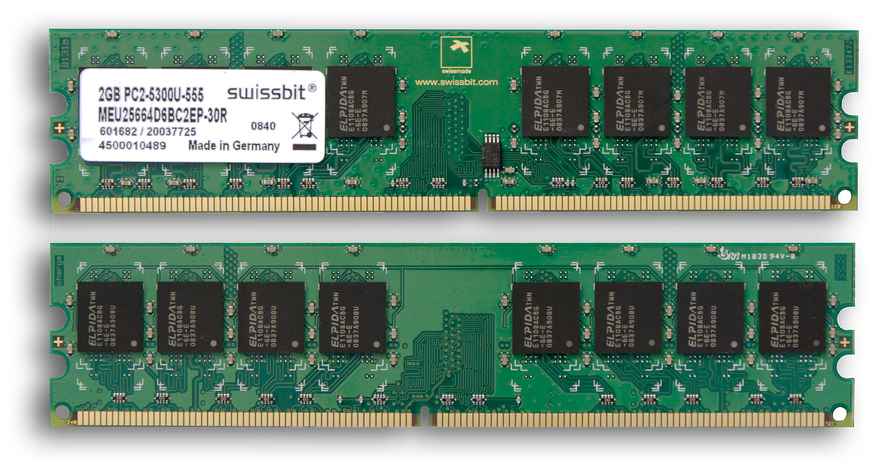

Rastgele erişimli hafıza (İng. İngilizce: Random Access Memory, RAM) mikroişlemcili sistemlerde kullanılan ve genellikle çalışma verilerini ve makine kodunu depolamak için kullanılan herhangi bir sırada okunabilen ve değiştirilebilen bir tür veri deposudur. Buna karşın diğer hafıza aygıtları (manyetik kasetler, diskler) saklama ortamındaki verilere önceden belirlenen bir sırada ulaşabilmektedir, çünkü mekanik tasarımları ancak buna izin vermektedir.
